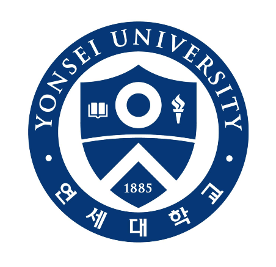
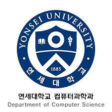

연세대학교(延世大學校, 영어: Yonsei University)는 1885년에 설립된 대한민국의 개신교 계통 사립 대학이다. 약칭으로 연대(延大)라고 불린다.
본교는 서울특별시 서대문구의 신촌캠퍼스이며, 분교는 강원도 원주시에 위치한 캠퍼스인 미래캠퍼스이다. 서울캠퍼스는 신촌캠퍼스/ 국제캠퍼스/ 삼애캠퍼스로 이루어져 있으며 미래캠퍼스는 매지캠퍼스/ 일산캠퍼스로 이루어져 있다.
학교법인 연세대학교에 의해 운영되고 있으며, 19개의 단과 대학, 17개의 대학원으로 구성된다. 현재(제19대) 총장은 연세대학교 경제학과를 졸업한 서승환이다.
연세대학교 공과대학 컴퓨터과학과는 컴퓨터과학 분야의 인력 양성을 위한 다양한 요구를 반영하기 위하여 1982년 이과대학 전산과학과로 신설되어, 1996년 공과대학으로 이전하면서 현재에 이르기까지 30년 이상 컴퓨터과학 분야에서 우수한 인재 양성과 활발한 첨단 연구 및 융합연구를 수행하여 오고 있다. 현재 약 300명의 학부생과 200명 내외의 석, 박사과정 대학원생, 그리고 19명의 교수로 구성되어 있다. 컴퓨터과학과 교육의 핵심은 정보화 사회의 리더로서 책임감을 갖추고 국가와 인류 발전에 공헌할 글로벌 고급 IT 전문 인력의 양성이다. 이러한 교육 목적의 핵심은 창의적 사고력, 신기술 적응력, 실용적 응용력의 세 가지 구체적 능력 개발에 초점을 맞추고 있다.
